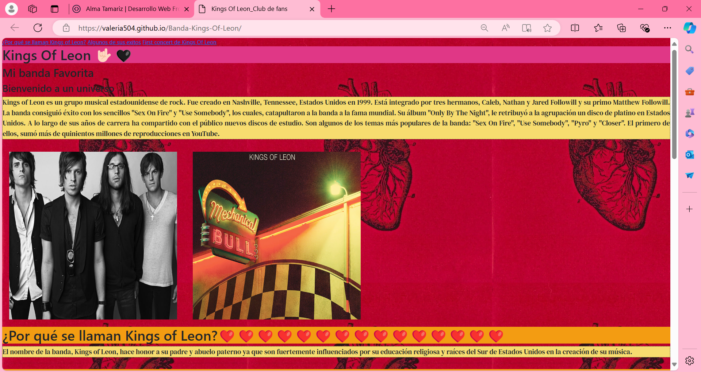
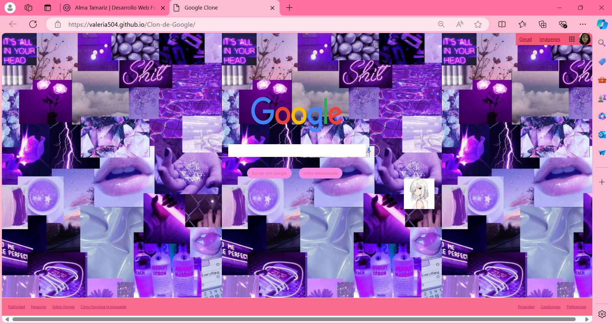

Soy apasionada por la tecnología y terminé el Bachillerato General con formación elemental para el trabajo en Tecnologías de información y comunicación
Competencias
Liderazgo, creatividad, escucha activa, flexible y trabajo en equipo.
CompromisoDesempeñoConstanciaActitud
Cursos
Hábilidades digitales The Trust for the Américas
Tecnolochica pro
Ciencia de datos de BEDU y fundación Televisa
Uso de ingles nivel 1
Capacitación Jovenes Con Rumbo
AprendizajeCreatividadCuriosidad
Estudiante
Terminé la preparatoria y en futuro cercano entrare a la carrera de derecho en la UNAM, cuando tenga mi primera carrera voy a estudiar una licenciatura en psicología y siempre será como mi pasatiempo favorito aprender sobre tecnología; hasta que esta pasión me lleve a una tercera carrea en Ingeniería de computación.
DerechopsicologíaIngeniería en computación
Mis proyectos recientes
Estos son algunos proyectos que he creado recientemente...

Proyecto 1: Página de artista favorito.

Proyecto 2: Clon de Google.
Proyecto 3: Portafolio.
Proyecto 4: Curriculum vitae.
Testimonios
Estos son algunos testimonios ...
Alma Valeria Martinez Tamariz ha demostrado ser una estudiante excepcional, destacándose por su dedicación, compromiso y actitud positiva hacia el aprendizaje. Su rendimiento académico es consistente y sobresaliente, y su capacidad para trabajar en equipo y apoyar a sus compañeros es admirable. Siempre está dispuesta a enfrentar nuevos desafíos con entusiasmo y perseverancia, lo que la convierte en un ejemplo a seguir para sus compañeros. Estoy segura de que Alma Valeria Martinez Tamariz continuará alcanzando grandes logros.
Jennifer Atenas Franco Angeles
Mentora de desarrollo web en Tecnolochicas pro
Alma Valeria Martinez Tamariz, no solo aporta ideas innovadoras y frescas a cada proyecto, sino que también tiene una habilidad única para transformar conceptos abstractos en soluciones creativas y tangibles.
Lo que realmente destaca en Alma Valeria es su habilidad para abordar problemas complejos con una combinación de creatividad y eficacia. No solo se adapta rápidamente a nuevos desafíos, sino que también aporta soluciones únicas que a menudo van más allá de lo esperado. Su compromiso con la excelencia se refleja en cada detalle de su trabajo y confío en que siempre dará lo mejor de sí.
Belén Paloma Catro Sánchez
Estidiante de medicina en el politécnico y de derecho en UAM.
Me complace recomendar a la alumna destacada, Alma Valeria Martínez Tamariz. Durante su trayectoria académica, ha demostrado ser una estudiante ejemplar, caracterizada por su disciplina, excelencia académica y capacidad para superar desafíos. Su destacada actuación la ubica entre las mejores estudiantes de su promoción.
Además de sus logros académicos, Alma Valeria posee habilidades valiosas como liderazgo, colaboración y responsabilidad. Siempre aborda problemas complejos con entusiasmo y perseverancia, y muestra un gran interés en adquirir conocimientos. Su búsqueda constante de autorrealización la impulsa a alcanzar metas cada vez más altas.
Estoy convencida de que Alma Valeria Martínez Tamariz alcanzará grandes logros en su vida personal y académica. Sus aportaciones serán valiosas en cualquier institución o programa en el que participe. La recomiendo sin reservas para cualquier oportunidad que se le presente.
Evelyn Medel Peralta
Estudiante de psicología
¡Hablemos!
Contáctame para realizar un proyecto de diseño, te ayudare aterrizar tus ideas y materializarlas.